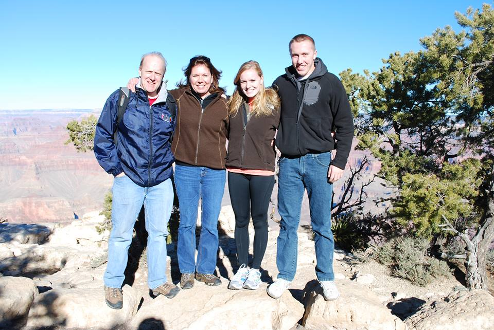
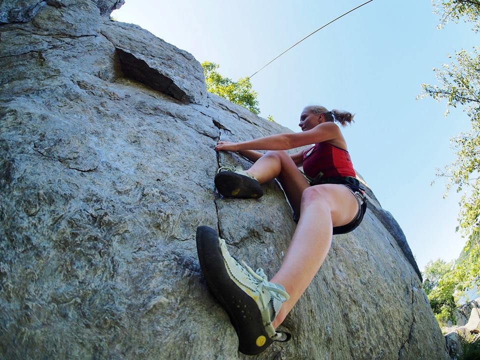

Family, Sports, and the Outdoors
I am incredibly close with my mom, dad, and little brother.
Sports are a huge part of my life. Playing soccer took up most of my time growing up, and I started field hockey in high school. I often wish I had tried to play field hockey in college, but I am glad that I have the opportunities to become involved in so many new things at UVA. Since high school, I started rock climbing. The thrill of climbing a seemingly flat rock face is exhilerating. Aside from playing sports, I am a huge Washington Capitals fan. While they aren't the best hockey team in the NHL, I have made great memories with my family and friends attending and watching games throughout my life.
